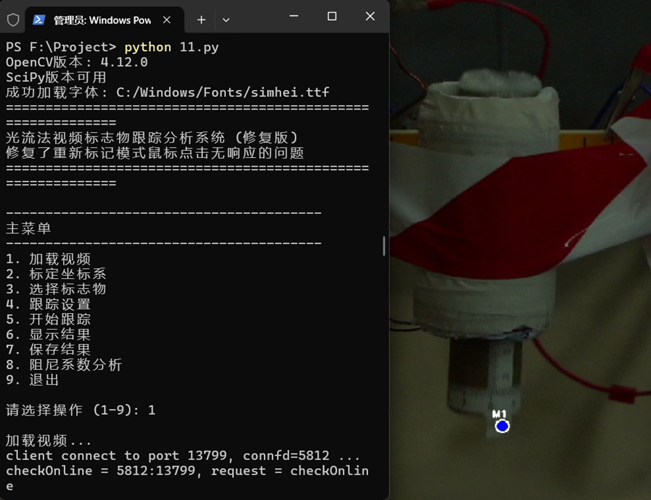
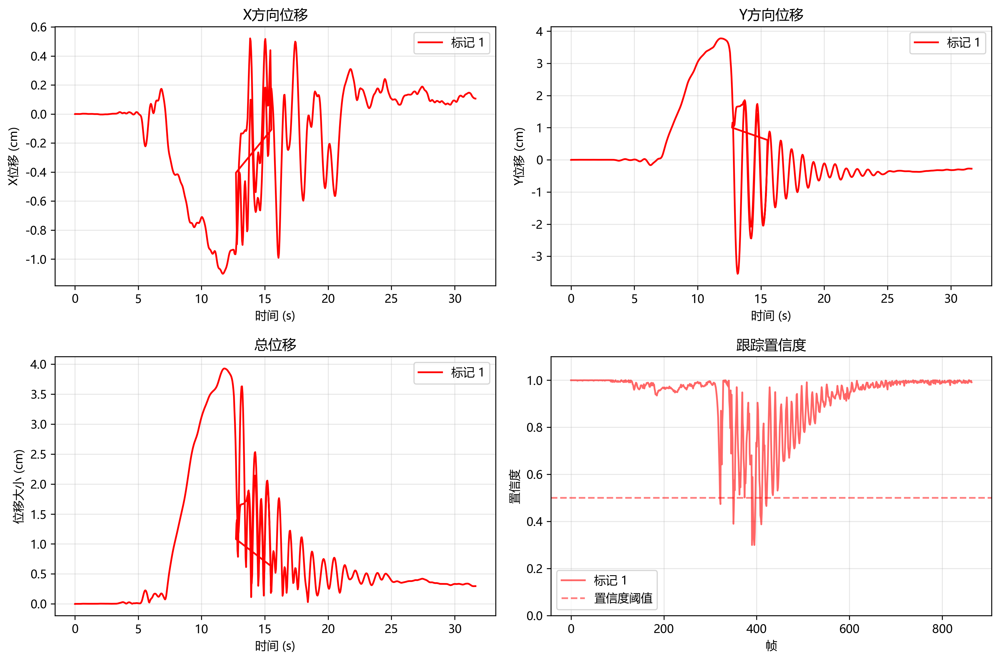
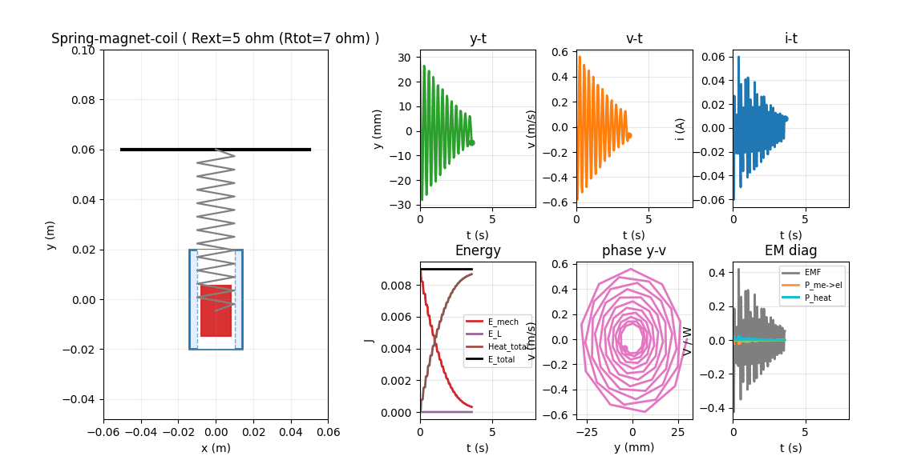
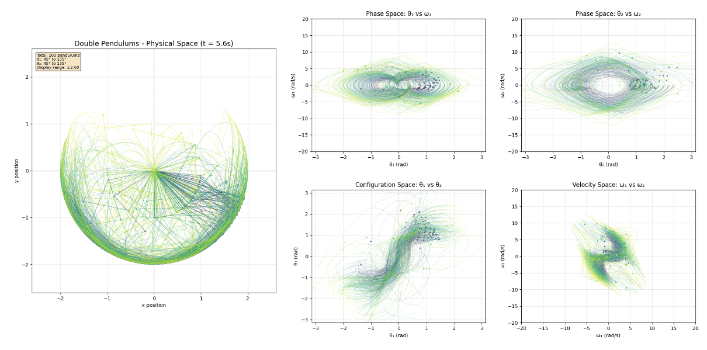
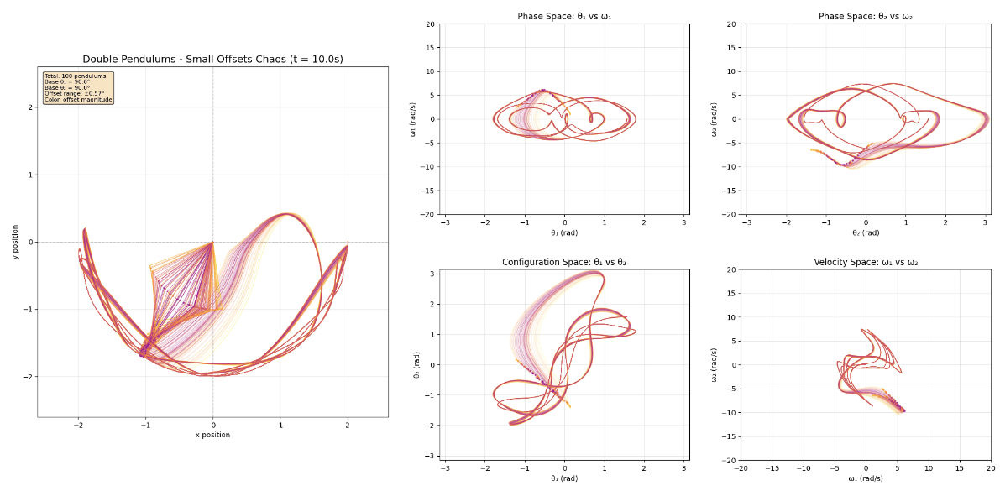
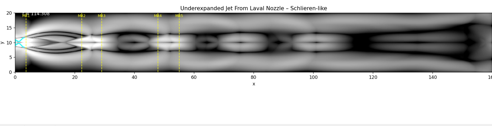
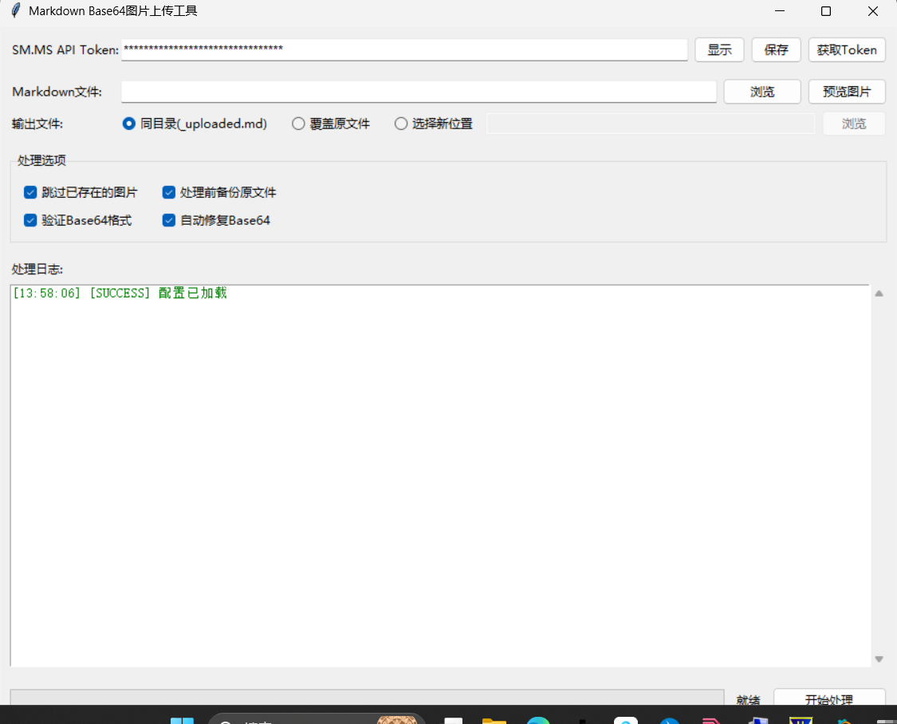

视频标志物跟踪分析系统
网页版可玩用 OpenCV 做视频运动分析：Lucas-Kanade 光流与特征点双算法跟踪，先把像素坐标标定到物理单位，再算位移、速度、加速度，最后自动拟合阻尼系数并导出 Excel 报告与曲线。
Python · OpenCV · NumPy · DataFrame


LEGACY · 早期项目
上大学时写的一批 Python 小工具，涵盖物理仿真、计算机视觉、文档处理与流体力学。原程序是 Tkinter / Matplotlib 桌面程序，现在六个全部移植成了浏览器版本——点「在线试玩 ▶」即可，不用装 Python。
源码仓库：Logicx200/-Python-
原博客页面写「六个工具」，这里六个都在；其中六个已移植为网页版。
用 OpenCV 做视频运动分析：Lucas-Kanade 光流与特征点双算法跟踪，先把像素坐标标定到物理单位，再算位移、速度、加速度，最后自动拟合阻尼系数并导出 Excel 报告与曲线。
Python · OpenCV · NumPy · DataFrame


磁铁挂在弹簧上穿过线圈振荡：机械振动 → 磁通变化 → 感应电动势 → 线圈电流 → 反向磁场力，两套 ODE 强耦合。求解器支持 RK4 / Numba / SciPy，可跑开路、闭路与临界阻尼，输出振动、电流与能量曲线。
Python · SciPy · NumPy · Tkinter


两种初值相差极小的双摆各跑 100 条轨迹，用四投影看混沌：物理空间、两个相空间（θ-ω）、构型空间（θ₁-θ₂）与速度空间（ω₁-ω₂）。蝴蝶效应在图上肉眼可见。
Python · SciPy RK45 · Matplotlib


用 HLLE 格式解二维欧拉方程，模拟拉瓦尔喷管欠膨胀超声速射流的激波系，并用伪纹影把密度梯度渲染成画面里的马赫环（激波钻石）。时间步长按 CFL 自适应。
Python · NumPy · CFD · Matplotlib

把 Word 文档转成 Markdown：识别标题层级、加粗斜体、表格、列表，图片可选「忽略」或「转成 Base64 内嵌」。网页版直接把 .docx 拖进浏览器，在本地解析，文件不上传。
Python · mammoth · Tkinter
写 Markdown 时处理图片：把本地图片转成 Base64 直接内嵌进文档，或批量上传到 SM.MS 图床换回链接，带格式校验与 Base64 修复。网页版默认纯本地转换，不发任何请求。
Python · requests · Pillow · Tkinter
